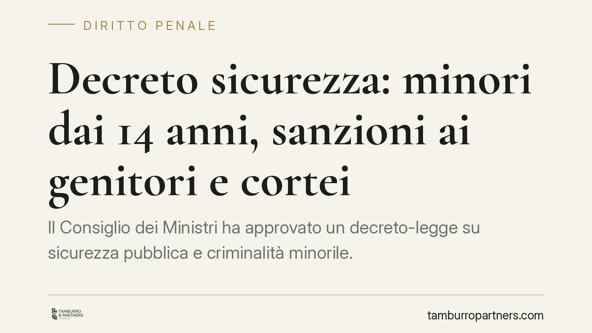

Decreto sicurezza: minori dai 14 anni, sanzioni ai genitori e cortei
Il Consiglio dei Ministri ha approvato un decreto-legge su sicurezza pubblica e criminalità minorile. Il provvedimento incide sull'accertamento dell'imputabilità a partire dai quattordici anni, prevede responsabilità sanzionatorie per i genitori, introduce un nuovo delitto legato alle violenze organizzate nelle manifestazioni e inasprisce pene e misure cautelari. Vediamo i punti che contano davvero per famiglie e difesa.

Inquadramento normativo
Il decreto interviene su un nodo classico del diritto penale minorile: l'imputabilità. L'art. 98 del Codice Penale stabilisce che il minore tra i quattordici e i diciotto anni è imputabile solo se, al momento del fatto, era capace di intendere e di volere. Non si tratta di una presunzione automatica: la capacità va accertata caso per caso, tenendo conto della maturità del singolo.
Il provvedimento rafforza e procedimentalizza questo accertamento. In altre parole, il giudice dovrà valutare con maggiore attenzione la maturità del quattordicenne, ma l'intento politico è rendere più effettiva la risposta sanzionatoria per fasce di età finora trattate con ampio favore rispetto alla sospensione del processo e alle misure alternative.
Accanto alla parte minorile, il decreto introduce un nuovo delitto di violenza organizzata nel contesto delle manifestazioni pubbliche. La ratio è colpire le condotte aggressive strutturate durante i cortei, distinguendole dal singolo gesto isolato. Si prevedono inoltre inasprimenti di pena e un ampliamento delle misure cautelari attivabili, con un ruolo accresciuto per questore e prefetto sul piano delle misure di prevenzione (strumenti amministrativi che anticipano la risposta rispetto all'accertamento penale).
Implicazioni pratiche
Per le famiglie il cambiamento più sensibile riguarda la responsabilità dei genitori. Il decreto introduce sanzioni collegate a condotte dei figli minori. Questo sposta parte del baricentro: non è più solo il minore a rispondere, ma anche chi esercita la responsabilità genitoriale può trovarsi destinatario di conseguenze afflittive. Occorrerà leggere con precisione i presupposti, perché una sanzione automatica svincolata da un profilo di colpa solleverebbe questioni di legittimità costituzionale.
Per chi partecipa a manifestazioni, il nuovo delitto richiede attenzione. La linea tra esercizio del diritto di riunione, garantito dalla Costituzione, e condotta penalmente rilevante diventa più delicata. La presenza fisica in un corteo in cui si verificano violenze non equivale, di per sé, a concorso nel reato: serve un contributo causale consapevole. Ma l'inasprimento delle pene e delle cautele aumenta il rischio concreto di misure restrittive già nelle prime fasi.
Sul versante minorile, la riduzione degli automatismi di favore significa che la difesa dovrà lavorare prima e meglio sull'accertamento della maturità e sulle alternative al circuito penale, come la messa alla prova.
Cosa fare in concreto
- Verificate i presupposti delle sanzioni ai genitori: chiedete sempre su quale condotta propria si fonda l'addebito; una sanzione senza profilo di colpa è contestabile.
- Documentate la partecipazione pacifica alle manifestazioni: in caso di contestazioni, elementi come orari, posizione e assenza di condotte attive sono decisivi.
- Attivate subito un difensore in caso di minore coinvolto: l'accertamento della maturità e la richiesta di messa alla prova vanno impostati dalle primissime fasi.
- Non sottovalutate le misure di prevenzione: fogli di via e provvedimenti del questore vanno impugnati nei termini, anche quando sembrano formalità.
- Conservate ogni atto notificato: verbali, decreti e notifiche sono la base per valutare vizi e termini di impugnazione.
Trattandosi di un decreto-legge, il testo dovrà essere convertito dal Parlamento entro sessanta giorni e potrà subire modifiche anche rilevanti. Consigliamo di monitorare l'iter di conversione, perché proprio in quella sede si definiranno i contorni applicativi delle nuove fattispecie e dei presupposti sanzionatori.
Un punto di equilibrio da presidiare
La materia tocca diritti di rango costituzionale: la libertà di riunione, la funzione rieducativa della pena e il principio di personalità della responsabilità penale. Ogni inasprimento va letto alla luce di questi principi. Il nostro invito, in questa fase, è di affrontare le contestazioni con attenzione ai presupposti sostanziali, evitando di accettare automatismi che la legge, correttamente interpretata, non impone.
Contributo informativo a cura di Tamburro & Partners - Avv. Giuseppe Tamburro. Non costituisce parere legale.
Ogni condominio ha una storia a sé.
Se gestisci un'amministrazione e vuoi un confronto su una specifica questione condominiale, scrivi allo studio. Ti rispondiamo entro un giorno lavorativo.